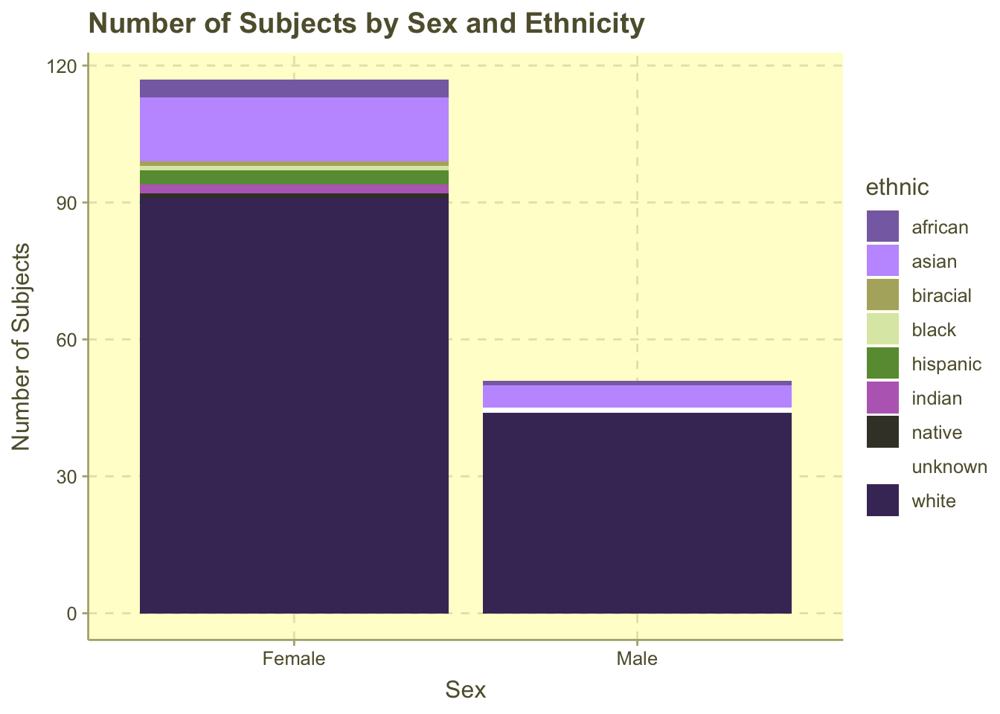
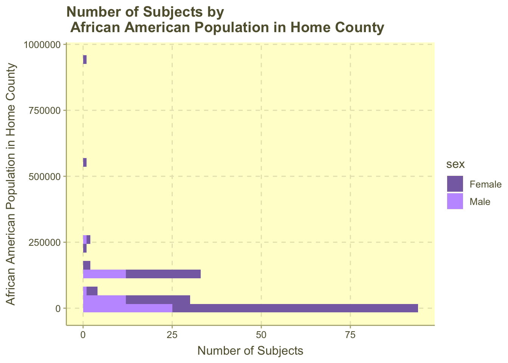

library(tidyverse)
library(here)
library(stringr)
library(ggthemr)Lab 3
Hip Hop Data set
hiphop <- read_csv(here::here("supporting_artifacts", "supporting_data", "hiphop.csv"))
num_subj <- nrow(distinct(hiphop, subj))
num_words <- nrow(distinct(hiphop, word))Originally, I only described the dimensions and variable types of this data set, which would not have helped someone reviewing this file understand this data. I really should have described how the data was collected and measured and who participated in it.
The hiphop data set includes information on 168 subjects’ familiarity on 64 words from African American English. The 168 subjects in this study were asked to participate in this study and are all students from the University of Minnesota, enrolled in undergraduate linguistics, sociology, or music classes. For each subject and vocabulary item, demographic (self reported), music preferences (reported as the number of artists students like in that genre), social network, and pop culture familiarity (recorded as 1-5 on the Likert scale for the students’ response to a pop culture question) are recorded.
Each row in hiphop is an observation of one subject’s familiarity with one word.
The missing values in the data set were replaced with the mean value of the variable. This method has the benefit of keeping all observations when performing calculations, however, it may not reflect the true value of the summary statistics or lead to false results.
I learned the str_replace_all method from the professor (Professor Jon James) I did research with this summer! I decided to remove it to to more easily see the ID; it was really just a preference and a chance to practice string methods.
hiphop <- hiphop |>
mutate(sex = as.factor(sex),
ethnic = as.factor(ethnic),
subj = as.numeric(str_replace_all(subj, "p", "")),
familiarity = as.numeric(familiarity))64 distinct AAE words were studied in the data set.
I, originally, used “1” and “0” instead of “white” and “non-white” because I have been so used to seeing 1s and 0s used for binary variables, and I am very new to factors. However, using “white” and “non-white” here makes the most sense for readability and data wrangling.
# note : I am not overwriting the hiphop data set here
# because I wanted to use ethnic in a graph in a later question
hiphop_ethnic <- hiphop |>
mutate(ethnic = ifelse(ethnic == "white", ethnic, "non-white"))hiphop |>
distinct(subj, .keep_all = TRUE) |>
mutate(sex = ifelse(sex == "Female", 1, 0),
ethnic = if_else(ethnic == "white", 1, 0)) |>
summarise(across(.cols = c(age, sex, ethnic),
.fns = mean,
.names = "mean_{.col}"))# A tibble: 1 × 3
mean_age mean_sex mean_ethnic
<dbl> <dbl> <dbl>
1 20.0 0.696 0.804The participants in this study are mostly young, white (80%), and female (70%) with an average age of about 20.
hiphop_individual <- hiphop |>
distinct(subj, .keep_all = TRUE)
ggthemr(palette = 'lilac')
#1
ggplot(data = hiphop_individual) +
geom_bar(mapping = aes(x = sex, fill = ethnic)) +
labs(x= "Sex",
y= "Number of Subjects",
title = "Number of Subjects by Sex and Ethnicity")
#2
ggplot(data = hiphop_individual) +
geom_histogram(mapping = aes(y = countyBlack,
fill = sex)) +
labs(x = "Number of Subjects",
y = "African American Population in Home County",
title = "Number of Subjects by\n African American Population in Home County")
- a
At first I thought using the slice() function would be more efficient because I could get the maximum and minimum familiarity words in one line, however, because slice() only uses row indices, it didn’t include ties. This meant that I instead of including 4 minimum familiarity words in part b and 25 minimum familiarity words in part c, I only included 1. While I wish there were a function that could call the maximum and minimum rows at the same time, for now, slice_max and slice_min are the way to go.
hiphop |>
filter(age < 20) |>
group_by(word) |>
summarise(famil = sum(familiarity)) |>
slice_max(order_by = famil)# A tibble: 1 × 2
word famil
<chr> <dbl>
1 off the hook 522hiphop |>
filter(age < 20) |>
group_by(word) |>
summarise(famil = sum(familiarity)) |>
slice_min(order_by = famil)# A tibble: 1 × 2
word famil
<chr> <dbl>
1 catch the vapors 121- For people under 20, the most familiar phrase on average is off the hook and the least familiar is catch the vapors.
9.b
hiphop |>
filter(sex == "Female", ethnic != "white") |>
group_by(word) |>
summarise(famil = sum(familiarity)) |>
slice_max(order_by = famil)# A tibble: 1 × 2
word famil
<chr> <dbl>
1 feel me 109min_female <- hiphop |>
filter(sex == "Female", ethnic != "white") |>
group_by(word) |>
summarise(famil = sum(familiarity)) |>
slice_min(order_by = famil)- For non-white females, the most familiar phrase on average is feel me and the least familiar are break someone out, dukey rope, plex, rollie.
I learned the toString() function from https://www.geeksforgeeks.org/convert-elements-of-a-vector-to-strings-in-r-language-tostring-function/
9.c
hiphop |>
filter(sex == "Male", ethnic == "white", age > 30) |>
group_by(word) |>
summarise(famil = sum(familiarity)) |>
slice_max(order_by = famil)# A tibble: 1 × 2
word famil
<chr> <dbl>
1 5-0 21min_male <- hiphop |>
filter(sex == "Male", ethnic == "white", age > 30) |>
group_by(word) |>
summarise(famil = sum(familiarity)) |>
slice_min(order_by = famil)- For white males over 30, the most familiar phrase on average is 5-0 and the least familiar are ay yo trip, beezy, break someone out, catch the vapors, crossroads, crump, dap, dollar cab, domino, duckets, face gator, fetti, finna, ghostride, good hair, grip grain, guap, humming, mail, plex, rollie, saditty, sweatbox, trill, twurk.
hiphop |>
distinct(subj, .keep_all = TRUE) |>
filter(age %in% 17:23,
sex == "Male",
ethnic == "white",
city %in% 10000:60000) |>
select(subj, age, sex, city, ethnic, bieber) |>
slice_max(order_by = bieber)# A tibble: 1 × 6
subj age sex city ethnic bieber
<dbl> <dbl> <fct> <dbl> <fct> <dbl>
1 17 18 Male 56377 white 5I believe the individual that is secretly Justin Bieber is subject 17, as this subject meets all the criteria for Bieber (white, 17-23, male, living in a city of 10,000 to 60,000) and has the highest bieber score (number of known Bieber songs).